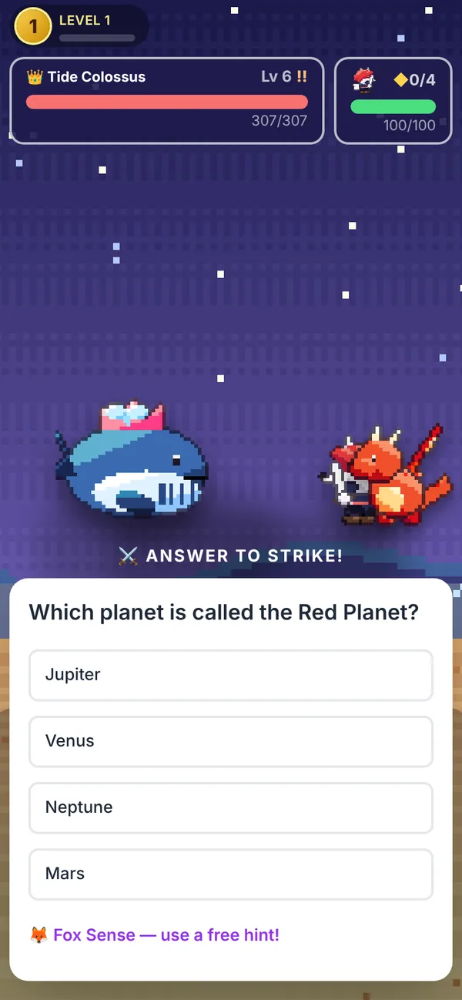
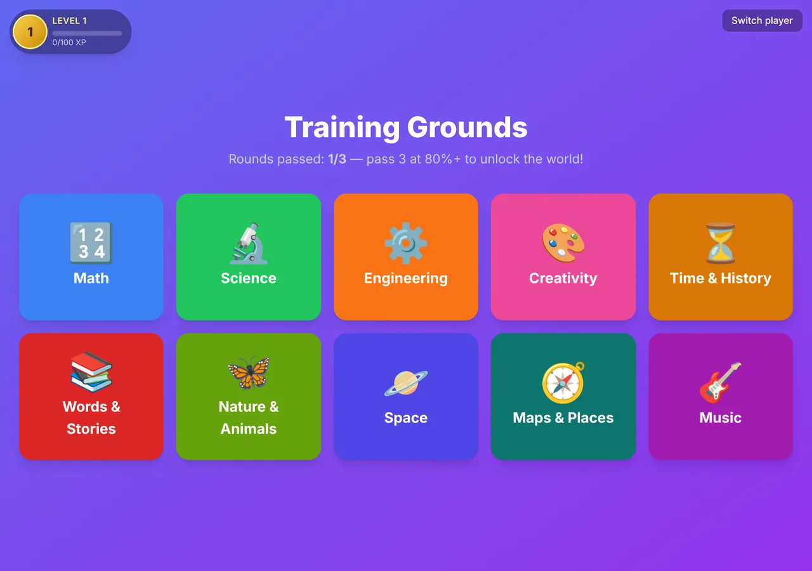
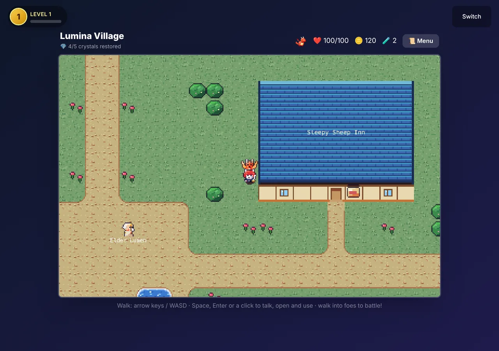
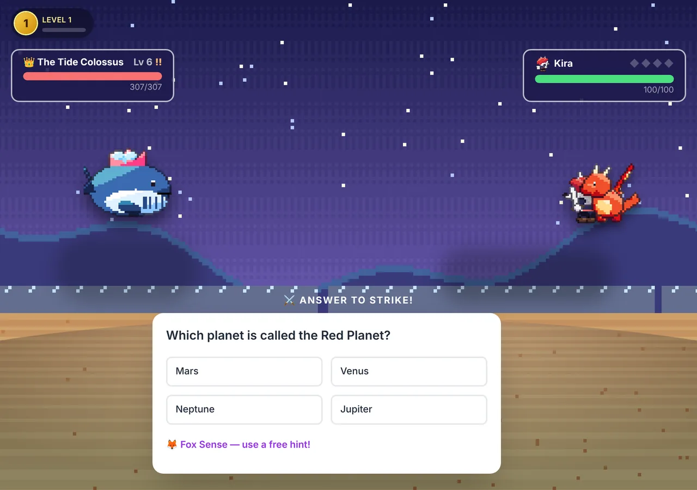
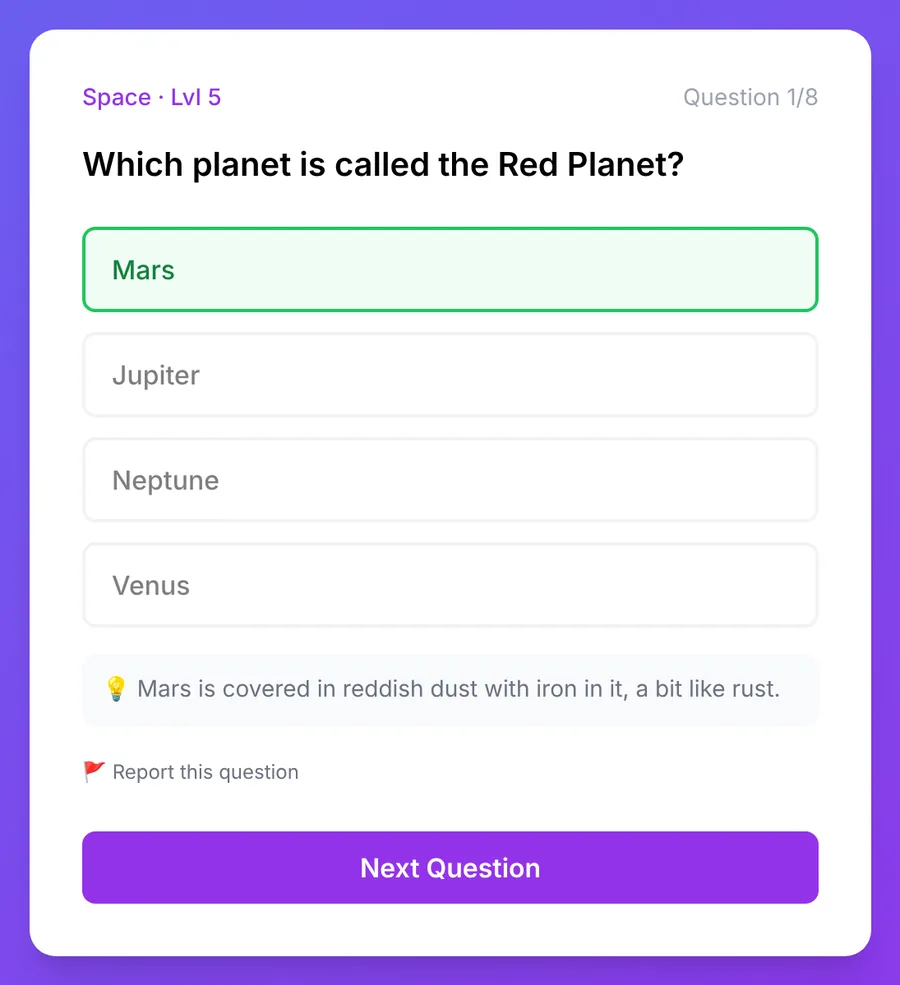
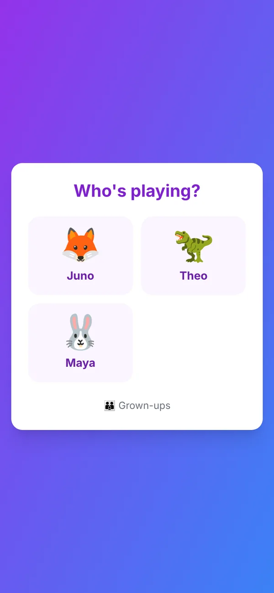
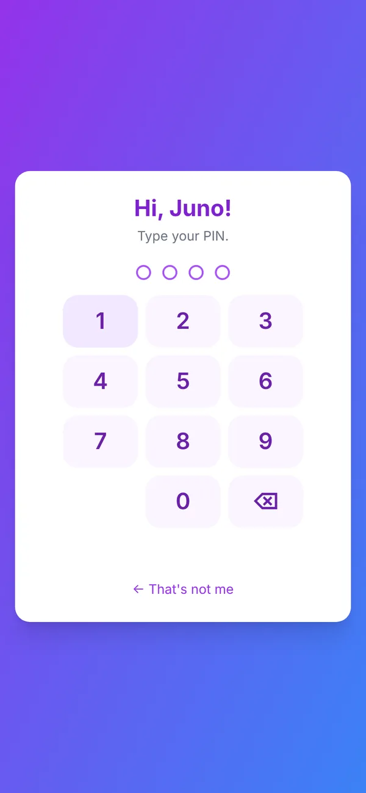

For parents, carers and teachers
An adventure game where every move is a question.
Hazel Quest is free and made for children aged 7 to 11. This page explains how it works, what your child practises, and how we keep it safe.
- Free
- Ages 7–11
- No ads or purchases
- No chat
- Plays in a web browser

The idea
Your child picks a hero and explores Lumina, a world of villages, forests, islands and caves. Along the way they meet critters and bosses. In a battle, every attack, spell and shield works only when they answer a question, so the learning is how they play.
They also raise Ember, a baby dragon who hatches after their first win and grows as they bring back the world's crystals. Later on, Ember is big enough to fly them across the sea.
How a play session goes
-

1Warm up in the Training Grounds
Short rounds of five questions in any of ten subjects. Passing three rounds opens the world.
-

2Explore and meet people
Villagers give directions and small quests. A flag on the map shows where to go next.
-

3Battle by answering
Attack, Guard, Spells and Items each ask a question. A right answer lands the move. A wrong one shows the right answer and why.
What they practise
- Math
- Science
- Engineering
- Creativity
- Time & History
- Words & Stories
- Nature & Animals
- Space
- Maps & Places
- Music
Questions start at the level that suits your child's age. Then each subject moves up or down on its own, depending on how they do.
Made to be encouraging
- There's no game over. If a battle is lost, the hero wakes up healed at the last inn they rested at.
- After two losses to the same critter, its questions get a little easier.
- Missed questions go to the Library in the game, where your child can try them again.
- Some battle questions have a countdown. You can switch it off in the game's Menu, under Battle.
How we keep it safe
-
No chat and no other players
Your child can't message anyone or be messaged, and there are no public profiles.
-
Nothing for them to type
Children only tap answers and buttons. Their nickname is the one thing typed for them, and you type it.
-
Free, with no ads and no purchases
Coins are earned in the game and can't be bought. We never sell or rent anyone's information.
-
You hold the account
You sign up with your email. Each child gets a nickname and a 4-digit PIN. We never ask for a child's full name, email, photo, voice or location.
-
The AI never knows who your child is
The only things about your child that the question writer is told are their age in years and their level.
-
Any question can be reported
Tap “Report this question” and it disappears for your whole family straight away.
How the questions are made and checked
Questions are written by Claude, an AI model made by Anthropic, and checked before your child sees them.
The game asks for questions
It sends a subject, your child's age in years and a level. Nothing else about your child.
The AI writes them under strict rules
Nothing violent, scary or sad. No religion or politics, no real people alive today, no brands or links. Facts only, each with one right answer.
A filter removes anything that breaks the rules
It blocks unsuitable words, links, email addresses and phone numbers, and checks that every question has four different answers.
A second AI checks each new question
It answers the question without being told the answer. The question is used only if it gets the same answer and agrees the question suits children.
Your child plays, and you can report
A report hides the question from your family. Choosing “Not OK for kids” also sends it to a person for review.

What we collect
- From you
- Your email address and password, to run your family account.
- For each child
- A nickname, their birth month and year, the picture you choose, their PIN (stored scrambled, so no one can read it back) and their game progress.
- Never
- A child's full name, email, photo, voice or location.
- Who helps us
- Supabase keeps accounts and saved games, Vercel runs the website and Anthropic writes the questions. They keep information on our behalf and may not use it for anything else.
Removing a child in the Grown-ups area deletes their information straight away.
You're in charge


- One free family account, for up to 8 children.
- Each child opens their own profile with a 4-digit PIN, so brothers and sisters keep their own progress.
- The Grown-ups area, where you add, change or remove children, opens only with your password or your own grown-up PIN.
- Children can switch players in the game, but only you can sign out.
Questions grown-ups ask
Is it really free?
Yes. There are no ads, no purchases and no paid upgrades.
What does my child need?
A web browser on a computer, tablet or phone. There's nothing to install. On touch screens the game shows its own on-screen controls.
What ages is it for?
It's made for 7 to 11. Because questions follow each child's age and level, younger and older children can play too.
Can my child talk to strangers?
No. There's no chat and no way to contact other players.
Is there a time limit?
Not yet. The game saves as your child plays, so they can stop whenever you say it's time.
Can we turn the music off?
Yes. Music and sound effects each have a switch in the game's Menu, under Audio.
Who makes Hazel Quest?
[OPERATOR NAME]. For questions about the game or your child's information, email [CONTACT EMAIL].